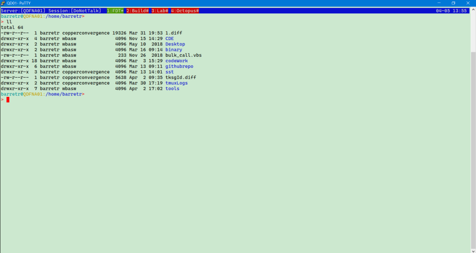
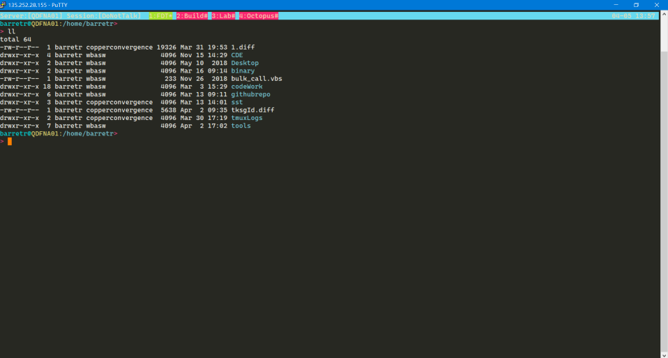

为什么开始使用Putty了？
之前分享了两个Xshell的配色方案，xshell这款软件也是用的很舒服。
奈何用的一直是家庭免费版，公司最近有同事收到了Adobe和Netsarang的律师函，盗版和家庭版被查出来了。没听说这位同事最后是怎么处理的，估计要辞退的。公司也为此在每个人的电脑上安装了监控软件，一旦有盗版和非商业允许的软件，就会报警，当然xshell是不能用了。 在尝试了多个SSH Client之后，最终还是选择了Putty。虽然原始古老，但却和我的Tmux/Vim兼容性最好，抓Log也算方便。于是乎，我之前设计保存的两个Putty的Color Theme也算派上了用场，就此分享：
护眼色Theme

Windows Registry Editor Version 5.00
[HKEY_CURRENT_USER\Software\SimonTatham\PuTTY\Sessions\Green]
"LogFileClash"=dword:00000001
"CloseOnExit"=dword:00000001
"PingInterval"=dword:00000001
"UserName"="barretr"
"BackspaceIsDelete"=dword:00000000
"LinuxFunctionKeys"=dword:00000002
"Beep"=dword:00000000
"WinNameAlways"=dword:00000000
"Font"="Cascadia Code"
"FontHeight"=dword:0000000b
"FontName"="Cascadia Code"
"Colour0"="0,0,0"
"Colour1"="0,0,0"
"Colour2"="224,241,226"
"Colour3"="224,241,226"
"Colour5"="255,0,0"
"Colour6"="46,52,54"
"Colour7"="85,87,83"
"Colour8"="204,0,0"
"Colour9"="239,41,41"
"Colour10"="78,154,6"
"Colour11"="33,141,5"
"Colour12"="196,160,0"
"Colour13"="218,165,32"
"Colour14"="69,73,245"
"Colour15"="55,60,244"
"Colour16"="117,80,123"
"Colour17"="173,127,168"
"Colour18"="6,152,154"
"Colour19"="52,226,226"
"Colour20"="211,215,207"
"Colour21"="238,238,236"
"MouseAutocopy"=dword:00000001
"LineCodePage"="UTF-8"
"X11Display"="localhost:0"
"BoldFont"=""
"BoldFontHeight"=dword:00000000
"BoldFontName"=""
"WideFont"=""
"WideFontHeight"=dword:00000000
"WideFontName"=""
"WideBoldFont"=""
"WideBoldFontHeight"=dword:00000000
"WideBoldFontName"=""
"GroupCollapse"=dword:00000001
"DataVersion"=dword:00000002
"Present"=dword:00000001
"LogType"=dword:00000000
"LogFlush"=dword:00000001
"LogHeader"=dword:00000001
"SSHLogOmitPasswords"=dword:00000001
"SSHLogOmitData"=dword:00000000
"Protocol"="ssh"
"PortNumber"=dword:00000016
"WarnOnClose"=dword:00000001
"PingIntervalSecs"=dword:00000000
"TCPNoDelay"=dword:00000001
"TCPKeepalives"=dword:00000000
"TerminalType"="xterm"
"TerminalSpeed"="38400,38400"
"TerminalModes"="CS7=A,CS8=A,DISCARD=A,DSUSP=A,ECHO=A,ECHOCTL=A,ECHOE=A,ECHOK=A,ECHOKE=A,ECHONL=A,EOF=A,EOL=A,EOL2=A,ERASE=A,FLUSH=A,ICANON=A,ICRNL=A,IEXTEN=A,IGNCR=A,IGNPAR=A,IMAXBEL=A,INLCR=A,INPCK=A,INTR=A,ISIG=A,ISTRIP=A,IUCLC=A,IUTF8=A,IXANY=A,IXOFF=A,IXON=A,KILL=A,LNEXT=A,NOFLSH=A,OCRNL=A,OLCUC=A,ONLCR=A,ONLRET=A,ONOCR=A,OPOST=A,PARENB=A,PARMRK=A,PARODD=A,PENDIN=A,QUIT=A,REPRINT=A,START=A,STATUS=A,STOP=A,SUSP=A,SWTCH=A,TOSTOP=A,WERASE=A,XCASE=A"
"AddressFamily"=dword:00000000
"ProxyExcludeList"=""
"ProxyDNS"=dword:00000001
"ProxyLocalhost"=dword:00000000
"ProxyMethod"=dword:00000000
"ProxyHost"="proxy"
"ProxyPort"=dword:00000050
"ProxyUsername"=""
"ProxyPassword"=""
"ProxyTelnetCommand"="connect %host %port\\n"
"ProxyLogToTerm"=dword:00000001
"Environment"=""
"UserNameFromEnvironment"=dword:00000000
"LocalUserName"=""
"NoPTY"=dword:00000000
"Compression"=dword:00000000
"TryAgent"=dword:00000001
"AgentFwd"=dword:00000000
"GssapiFwd"=dword:00000000
"ChangeUsername"=dword:00000000
"Cipher"="aes,chacha20,3des,WARN,des,blowfish,arcfour"
"KEX"="ecdh,dh-gex-sha1,dh-group14-sha1,rsa,WARN,dh-group1-sha1"
"HostKey"="ed25519,ecdsa,rsa,dsa,WARN"
"RekeyTime"=dword:0000003c
"GssapiRekey"=dword:00000002
"RekeyBytes"="1G"
"SshNoAuth"=dword:00000000
"SshBanner"=dword:00000001
"AuthTIS"=dword:00000000
"AuthKI"=dword:00000001
"AuthGSSAPI"=dword:00000001
"AuthGSSAPIKEX"=dword:00000001
"GSSLibs"="gssapi32,sspi,custom"
"GSSCustom"=""
"SshNoShell"=dword:00000000
"SshProt"=dword:00000003
"LogHost"=""
"SSH2DES"=dword:00000000
"RemoteCommand"=""
"RFCEnviron"=dword:00000000
"PassiveTelnet"=dword:00000000
"RXVTHomeEnd"=dword:00000000
"NoApplicationKeys"=dword:00000000
"NoApplicationCursors"=dword:00000000
"NoMouseReporting"=dword:00000000
"NoRemoteResize"=dword:00000000
"NoAltScreen"=dword:00000000
"NoRemoteWinTitle"=dword:00000000
"NoRemoteClearScroll"=dword:00000000
"RemoteQTitleAction"=dword:00000001
"NoDBackspace"=dword:00000000
"NoRemoteCharset"=dword:00000000
"ApplicationCursorKeys"=dword:00000000
"ApplicationKeypad"=dword:00000000
"NetHackKeypad"=dword:00000000
"AltF4"=dword:00000001
"AltSpace"=dword:00000000
"AltOnly"=dword:00000000
"ComposeKey"=dword:00000000
"CtrlAltKeys"=dword:00000001
"TelnetKey"=dword:00000000
"TelnetRet"=dword:00000001
"LocalEcho"=dword:00000002
"LocalEdit"=dword:00000002
"Answerback"="PuTTY"
"AlwaysOnTop"=dword:00000000
"FullScreenOnAltEnter"=dword:00000001
"HideMousePtr"=dword:00000000
"SunkenEdge"=dword:00000000
"WindowBorder"=dword:00000001
"CurType"=dword:00000000
"BlinkCur"=dword:00000000
"BeepInd"=dword:00000000
"BellWaveFile"=""
"BellOverload"=dword:00000001
"BellOverloadN"=dword:00000005
"BellOverloadT"=dword:000007d0
"BellOverloadS"=dword:00001388
"ScrollbackLines"=dword:000007d0
"DECOriginMode"=dword:00000000
"AutoWrapMode"=dword:00000001
"LFImpliesCR"=dword:00000000
"CRImpliesLF"=dword:00000000
"DisableArabicShaping"=dword:00000000
"DisableBidi"=dword:00000000
"TermWidth"=dword:00000050
"TermHeight"=dword:00000018
"FontIsBold"=dword:00000000
"FontCharSet"=dword:00000000
"FontQuality"=dword:00000000
"FontVTMode"=dword:00000004
"UseSystemColours"=dword:00000000
"TryPalette"=dword:00000000
"ANSIColour"=dword:00000001
"Xterm256Colour"=dword:00000001
"TrueColour"=dword:00000001
"BoldAsColour"=dword:00000001
"Colour4"="0,0,0"
"RawCNP"=dword:00000000
"UTF8linedraw"=dword:00000000
"PasteRTF"=dword:00000000
"MouseIsXterm"=dword:00000000
"RectSelect"=dword:00000000
"PasteControls"=dword:00000000
"MouseOverride"=dword:00000001
"Wordness0"="0,0,0,0,0,0,0,0,0,0,0,0,0,0,0,0,0,0,0,0,0,0,0,0,0,0,0,0,0,0,0,0"
"Wordness32"="0,1,2,1,1,1,1,1,1,1,1,1,1,2,2,2,2,2,2,2,2,2,2,2,2,2,1,1,1,1,1,1"
"Wordness64"="1,2,2,2,2,2,2,2,2,2,2,2,2,2,2,2,2,2,2,2,2,2,2,2,2,2,2,1,1,1,1,2"
"Wordness96"="1,2,2,2,2,2,2,2,2,2,2,2,2,2,2,2,2,2,2,2,2,2,2,2,2,2,2,1,1,1,1,1"
"Wordness128"="1,1,1,1,1,1,1,1,1,1,1,1,1,1,1,1,1,1,1,1,1,1,1,1,1,1,1,1,1,1,1,1"
"Wordness160"="1,1,1,1,1,1,1,1,1,1,1,1,1,1,1,1,1,1,1,1,1,1,1,1,1,1,1,1,1,1,1,1"
"Wordness192"="2,2,2,2,2,2,2,2,2,2,2,2,2,2,2,2,2,2,2,2,2,2,2,1,2,2,2,2,2,2,2,2"
"Wordness224"="2,2,2,2,2,2,2,2,2,2,2,2,2,2,2,2,2,2,2,2,2,2,2,1,2,2,2,2,2,2,2,2"
"MousePaste"="explicit"
"CtrlShiftIns"="explicit"
"CtrlShiftCV"="none"
"CJKAmbigWide"=dword:00000000
"UTF8Override"=dword:00000001
"Printer"=""
"CapsLockCyr"=dword:00000000
"ScrollBar"=dword:00000001
"ScrollBarFullScreen"=dword:00000000
"ScrollOnKey"=dword:00000000
"ScrollOnDisp"=dword:00000001
"EraseToScrollback"=dword:00000001
"LockSize"=dword:00000000
"BCE"=dword:00000001
"BlinkText"=dword:00000000
"X11Forward"=dword:00000000
"X11AuthType"=dword:00000001
"X11AuthFile"=""
"LocalPortAcceptAll"=dword:00000000
"RemotePortAcceptAll"=dword:00000000
"PortForwardings"=""
"BugIgnore1"=dword:00000000
"BugPlainPW1"=dword:00000000
"BugRSA1"=dword:00000000
"BugIgnore2"=dword:00000000
"BugHMAC2"=dword:00000000
"BugDeriveKey2"=dword:00000000
"BugRSAPad2"=dword:00000000
"BugPKSessID2"=dword:00000000
"BugRekey2"=dword:00000000
"BugMaxPkt2"=dword:00000000
"BugOldGex2"=dword:00000000
"BugWinadj"=dword:00000000
"BugChanReq"=dword:00000000
"StampUtmp"=dword:00000001
"LoginShell"=dword:00000001
"ScrollbarOnLeft"=dword:00000000
"BoldFontIsBold"=dword:00000000
"BoldFontCharSet"=dword:00000000
"WideFontIsBold"=dword:00000000
"WideFontCharSet"=dword:00000000
"WideBoldFontIsBold"=dword:00000000
"WideBoldFontCharSet"=dword:00000000
"ShadowBold"=dword:00000000
"ShadowBoldOffset"=dword:00000001
"SerialLine"="COM1"
"SerialSpeed"=dword:00002580
"SerialDataBits"=dword:00000008
"SerialStopHalfbits"=dword:00000002
"SerialParity"=dword:00000000
"SerialFlowControl"=dword:00000001
"WindowClass"=""
"ConnectionSharing"=dword:00000000
"ConnectionSharingUpstream"=dword:00000001
"ConnectionSharingDownstream"=dword:00000001
"SSHManualHostKeys"=""
"PreferKnownHostKeys"=dword:00000001
经典Monokai Theme

Windows Registry Editor Version 5.00
[HKEY_CURRENT_USER\Software\SimonTatham\PuTTY\Sessions\dark]
"Present"=dword:00000001
"LogType"=dword:00000000
"LogFileClash"=dword:00000001
"LogFlush"=dword:00000001
"LogHeader"=dword:00000001
"SSHLogOmitPasswords"=dword:00000001
"SSHLogOmitData"=dword:00000000
"Protocol"="ssh"
"PortNumber"=dword:00000016
"CloseOnExit"=dword:00000001
"WarnOnClose"=dword:00000001
"PingInterval"=dword:00000000
"PingIntervalSecs"=dword:00000000
"TCPNoDelay"=dword:00000001
"TCPKeepalives"=dword:00000000
"TerminalType"="xterm"
"TerminalSpeed"="38400,38400"
"TerminalModes"="CS7=A,CS8=A,DISCARD=A,DSUSP=A,ECHO=A,ECHOCTL=A,ECHOE=A,ECHOK=A,ECHOKE=A,ECHONL=A,EOF=A,EOL=A,EOL2=A,ERASE=A,FLUSH=A,ICANON=A,ICRNL=A,IEXTEN=A,IGNCR=A,IGNPAR=A,IMAXBEL=A,INLCR=A,INPCK=A,INTR=A,ISIG=A,ISTRIP=A,IUCLC=A,IUTF8=A,IXANY=A,IXOFF=A,IXON=A,KILL=A,LNEXT=A,NOFLSH=A,OCRNL=A,OLCUC=A,ONLCR=A,ONLRET=A,ONOCR=A,OPOST=A,PARENB=A,PARMRK=A,PARODD=A,PENDIN=A,QUIT=A,REPRINT=A,START=A,STATUS=A,STOP=A,SUSP=A,SWTCH=A,TOSTOP=A,WERASE=A,XCASE=A"
"AddressFamily"=dword:00000000
"ProxyExcludeList"=""
"ProxyDNS"=dword:00000001
"ProxyLocalhost"=dword:00000000
"ProxyMethod"=dword:00000000
"ProxyHost"="proxy"
"ProxyPort"=dword:00000050
"ProxyUsername"=""
"ProxyPassword"=""
"ProxyTelnetCommand"="connect %host %port\\n"
"ProxyLogToTerm"=dword:00000001
"Environment"=""
"UserName"="barretr"
"UserNameFromEnvironment"=dword:00000000
"LocalUserName"=""
"NoPTY"=dword:00000000
"Compression"=dword:00000000
"TryAgent"=dword:00000001
"AgentFwd"=dword:00000000
"GssapiFwd"=dword:00000000
"ChangeUsername"=dword:00000000
"Cipher"="aes,chacha20,3des,WARN,des,blowfish,arcfour"
"KEX"="ecdh,dh-gex-sha1,dh-group14-sha1,rsa,WARN,dh-group1-sha1"
"HostKey"="ed25519,ecdsa,rsa,dsa,WARN"
"RekeyTime"=dword:0000003c
"GssapiRekey"=dword:00000002
"RekeyBytes"="1G"
"SshNoAuth"=dword:00000000
"SshBanner"=dword:00000001
"AuthTIS"=dword:00000000
"AuthKI"=dword:00000001
"AuthGSSAPI"=dword:00000001
"AuthGSSAPIKEX"=dword:00000001
"GSSLibs"="gssapi32,sspi,custom"
"GSSCustom"=""
"SshNoShell"=dword:00000000
"SshProt"=dword:00000003
"LogHost"=""
"SSH2DES"=dword:00000000
"RemoteCommand"=""
"RFCEnviron"=dword:00000000
"PassiveTelnet"=dword:00000000
"BackspaceIsDelete"=dword:00000000
"RXVTHomeEnd"=dword:00000000
"LinuxFunctionKeys"=dword:00000002
"NoApplicationKeys"=dword:00000000
"NoApplicationCursors"=dword:00000000
"NoMouseReporting"=dword:00000000
"NoRemoteResize"=dword:00000000
"NoAltScreen"=dword:00000000
"NoRemoteWinTitle"=dword:00000000
"NoRemoteClearScroll"=dword:00000000
"RemoteQTitleAction"=dword:00000001
"NoDBackspace"=dword:00000000
"NoRemoteCharset"=dword:00000000
"ApplicationCursorKeys"=dword:00000000
"ApplicationKeypad"=dword:00000000
"NetHackKeypad"=dword:00000000
"AltF4"=dword:00000001
"AltSpace"=dword:00000000
"AltOnly"=dword:00000000
"ComposeKey"=dword:00000000
"CtrlAltKeys"=dword:00000001
"TelnetKey"=dword:00000000
"TelnetRet"=dword:00000001
"LocalEcho"=dword:00000002
"LocalEdit"=dword:00000002
"Answerback"="PuTTY"
"AlwaysOnTop"=dword:00000000
"FullScreenOnAltEnter"=dword:00000000
"HideMousePtr"=dword:00000000
"SunkenEdge"=dword:00000000
"WindowBorder"=dword:00000001
"CurType"=dword:00000000
"BlinkCur"=dword:00000000
"Beep"=dword:00000000
"BeepInd"=dword:00000000
"BellWaveFile"=""
"BellOverload"=dword:00000001
"BellOverloadN"=dword:00000005
"BellOverloadT"=dword:000007d0
"BellOverloadS"=dword:00001388
"ScrollbackLines"=dword:000007d0
"DECOriginMode"=dword:00000000
"AutoWrapMode"=dword:00000001
"LFImpliesCR"=dword:00000000
"CRImpliesLF"=dword:00000000
"DisableArabicShaping"=dword:00000000
"DisableBidi"=dword:00000000
"WinNameAlways"=dword:00000000
"TermWidth"=dword:00000050
"TermHeight"=dword:00000018
"Font"="Cascadia Code"
"FontIsBold"=dword:00000000
"FontCharSet"=dword:00000000
"FontHeight"=dword:0000000b
"FontQuality"=dword:00000000
"FontVTMode"=dword:00000004
"UseSystemColours"=dword:00000000
"TryPalette"=dword:00000000
"ANSIColour"=dword:00000001
"Xterm256Colour"=dword:00000001
"TrueColour"=dword:00000001
"BoldAsColour"=dword:00000001
"Colour0"="210,216,217"
"Colour1"="236,236,236"
"Colour2"="39,40,34"
"Colour3"="39,40,34"
"Colour4"="0,0,0"
"Colour5"="255,128,0"
"Colour6"="0,0,0"
"Colour7"="85,85,85"
"Colour8"="249,38,114"
"Colour9"="221,66,120"
"Colour10"="166,226,46"
"Colour11"="157,197,75"
"Colour12"="230,219,116"
"Colour13"="209,202,137"
"Colour14"="102,217,239"
"Colour15"="122,204,218"
"Colour16"="174,129,255"
"Colour17"="179,146,239"
"Colour18"="0,217,217"
"Colour19"="200,240,240"
"Colour20"="245,222,179"
"Colour21"="255,255,255"
"RawCNP"=dword:00000000
"UTF8linedraw"=dword:00000000
"PasteRTF"=dword:00000000
"MouseIsXterm"=dword:00000000
"RectSelect"=dword:00000000
"PasteControls"=dword:00000000
"MouseOverride"=dword:00000001
"Wordness0"="0,0,0,0,0,0,0,0,0,0,0,0,0,0,0,0,0,0,0,0,0,0,0,0,0,0,0,0,0,0,0,0"
"Wordness32"="0,1,2,1,1,1,1,1,1,1,1,1,1,2,2,2,2,2,2,2,2,2,2,2,2,2,1,1,1,1,1,1"
"Wordness64"="1,2,2,2,2,2,2,2,2,2,2,2,2,2,2,2,2,2,2,2,2,2,2,2,2,2,2,1,1,1,1,2"
"Wordness96"="1,2,2,2,2,2,2,2,2,2,2,2,2,2,2,2,2,2,2,2,2,2,2,2,2,2,2,1,1,1,1,1"
"Wordness128"="1,1,1,1,1,1,1,1,1,1,1,1,1,1,1,1,1,1,1,1,1,1,1,1,1,1,1,1,1,1,1,1"
"Wordness160"="1,1,1,1,1,1,1,1,1,1,1,1,1,1,1,1,1,1,1,1,1,1,1,1,1,1,1,1,1,1,1,1"
"Wordness192"="2,2,2,2,2,2,2,2,2,2,2,2,2,2,2,2,2,2,2,2,2,2,2,1,2,2,2,2,2,2,2,2"
"Wordness224"="2,2,2,2,2,2,2,2,2,2,2,2,2,2,2,2,2,2,2,2,2,2,2,1,2,2,2,2,2,2,2,2"
"MouseAutocopy"=dword:00000001
"MousePaste"="explicit"
"CtrlShiftIns"="explicit"
"CtrlShiftCV"="none"
"LineCodePage"="UTF-8"
"CJKAmbigWide"=dword:00000000
"UTF8Override"=dword:00000001
"Printer"=""
"CapsLockCyr"=dword:00000000
"ScrollBar"=dword:00000001
"ScrollBarFullScreen"=dword:00000000
"ScrollOnKey"=dword:00000000
"ScrollOnDisp"=dword:00000001
"EraseToScrollback"=dword:00000001
"LockSize"=dword:00000000
"BCE"=dword:00000001
"BlinkText"=dword:00000000
"X11Forward"=dword:00000000
"X11Display"=""
"X11AuthType"=dword:00000001
"X11AuthFile"=""
"LocalPortAcceptAll"=dword:00000000
"RemotePortAcceptAll"=dword:00000000
"PortForwardings"=""
"BugIgnore1"=dword:00000000
"BugPlainPW1"=dword:00000000
"BugRSA1"=dword:00000000
"BugIgnore2"=dword:00000000
"BugHMAC2"=dword:00000000
"BugDeriveKey2"=dword:00000000
"BugRSAPad2"=dword:00000000
"BugPKSessID2"=dword:00000000
"BugRekey2"=dword:00000000
"BugMaxPkt2"=dword:00000000
"BugOldGex2"=dword:00000000
"BugWinadj"=dword:00000000
"BugChanReq"=dword:00000000
"StampUtmp"=dword:00000001
"LoginShell"=dword:00000001
"ScrollbarOnLeft"=dword:00000000
"BoldFont"=""
"BoldFontIsBold"=dword:00000000
"BoldFontCharSet"=dword:00000000
"BoldFontHeight"=dword:00000000
"WideFont"=""
"WideFontIsBold"=dword:00000000
"WideFontCharSet"=dword:00000000
"WideFontHeight"=dword:00000000
"WideBoldFont"=""
"WideBoldFontIsBold"=dword:00000000
"WideBoldFontCharSet"=dword:00000000
"WideBoldFontHeight"=dword:00000000
"ShadowBold"=dword:00000000
"ShadowBoldOffset"=dword:00000001
"SerialLine"="COM1"
"SerialSpeed"=dword:00002580
"SerialDataBits"=dword:00000008
"SerialStopHalfbits"=dword:00000002
"SerialParity"=dword:00000000
"SerialFlowControl"=dword:00000001
"WindowClass"=""
"ConnectionSharing"=dword:00000000
"ConnectionSharingUpstream"=dword:00000001
"ConnectionSharingDownstream"=dword:00000001
"SSHManualHostKeys"=""
"PreferKnownHostKeys"=dword:00000001